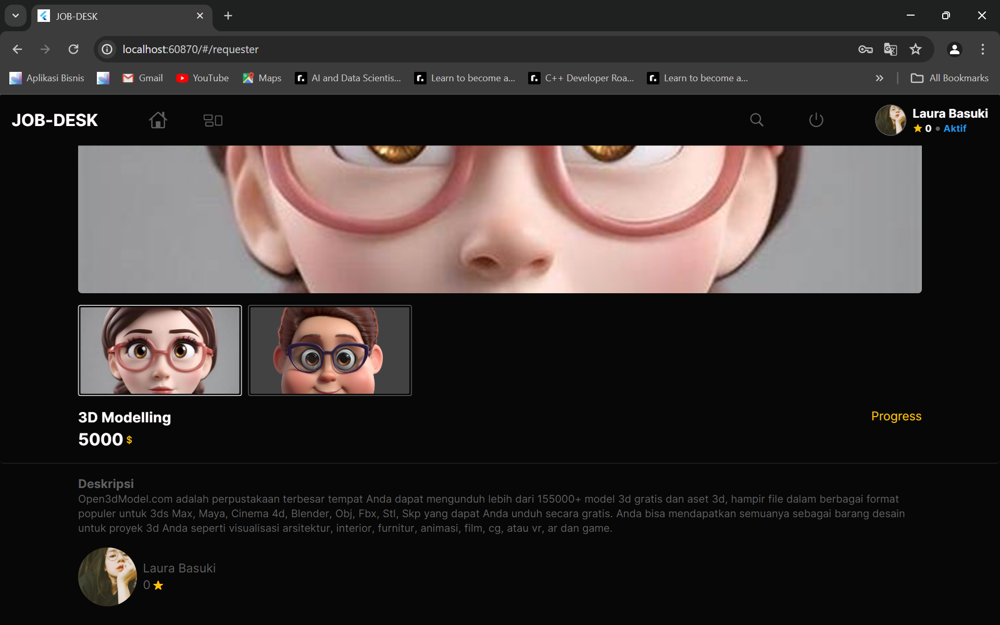
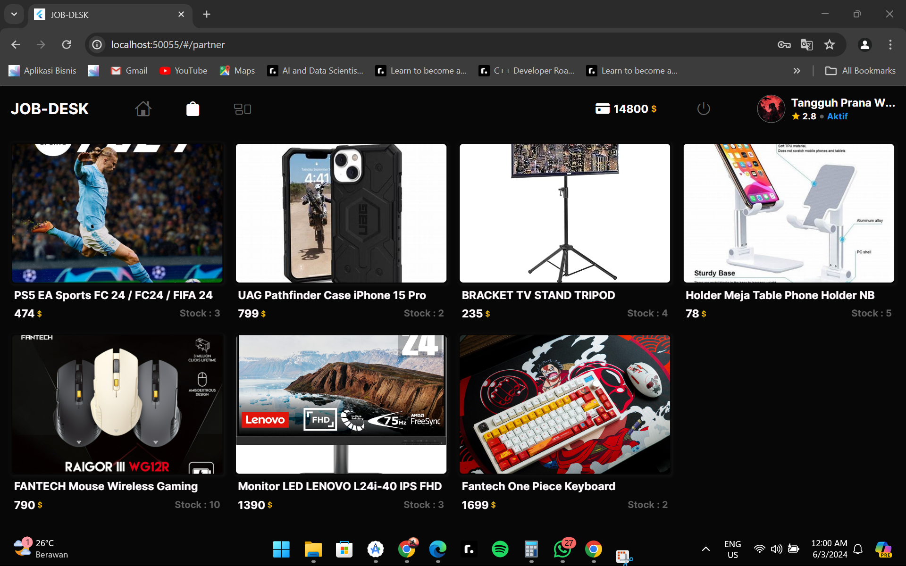
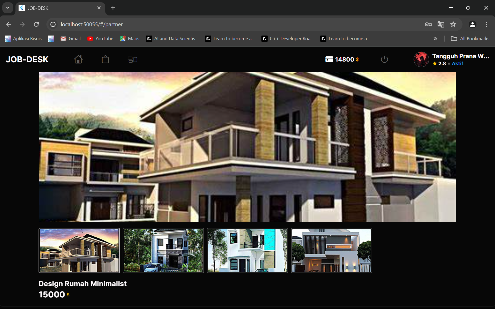

Sistem Pekerjaan Sampingan Berbasis Website
Website berbasis Flutter dengan Firebase yang memungkinkan pengguna menjadi partner atau requester dalam pekerjaan sampingan.
Tentang Proyek
Sistem pekerjaan sampingan untuk karyawan PT Pupuk Sriwidjaja (Pusri). Pengguna dapat menjadi partner (pekerja sampingan) atau requester (pembuat pekerjaan). Tugas yang diselesaikan partner dapat ditukarkan menjadi hadiah atau uang.
Alur Pekerjaan
- Requester membuat pekerjaanPekerjaan sampingan ditulis dan dipublikasikan.
- Partner mengerjakanPartner memilih pekerjaan dan menyelesaikannya.
- Hasil dicatatPekerjaan yang selesai tercatat sebagai hasil partner.
- PenukaranHasil ditukar menjadi hadiah atau uang.
Screenshot Aplikasi

Halaman Partner

Halaman Partner Detail

Halaman Barang yang Ditukar

Halaman Requester Detail
Teknologi yang Digunakan
Flutter
Dart
Firebase
Fitur
- Partner sebagai pekerja sampingan
- Requester sebagai pembuat pekerjaan sampingan
- Hasil pekerjaan dapat ditukar menjadi hadiah atau uang